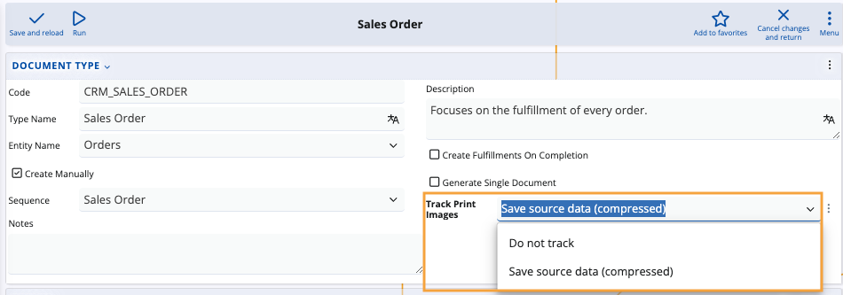
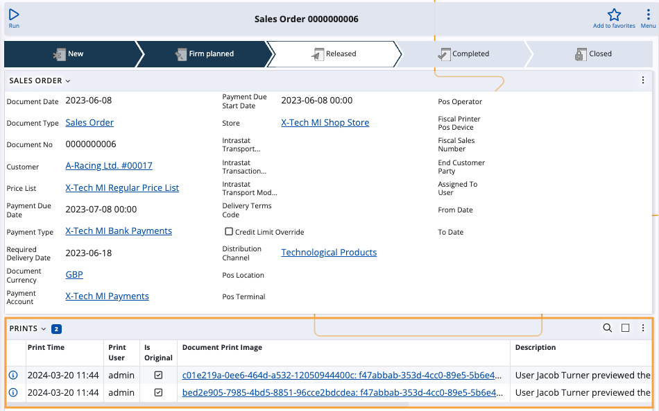

Document print images
Document print images contain the data of a printout of a document as it was obtained at the moment of printing.
This data is used as a history in order to review the visual representation of the printed document.
Delete old images
Document print images often take the most space in customer databases.
One means of managing them is to delete the more obsolete records periodically. This can be done with the Deletе old document print images system job.
However, there is a way to not even track print records in the first place.
Print images tracking
For every document type, you can configure a setting that allows you to decide if printouts will be tracked for all documents of this type.
This is done to ensure that no unnecessary amount of space is accummulated as a result of constant print image tracking.
Step-by-step process
Go to a document type definition (e.g. Sales Order) and navigate to the Track Print Images field.
If this field is not visible, enable it using the Customize panel option.
Select one of the available settings:
Do not track - prevents printouts of all documents of the respective type to be automatically created.
Save source data (compressed) - allows visual representations of printed documents of the respective type to be saved and available for preview.

If this setting is active, the Prints panel of every document of the respective type will begin to create records for print images every time that document is printed.
